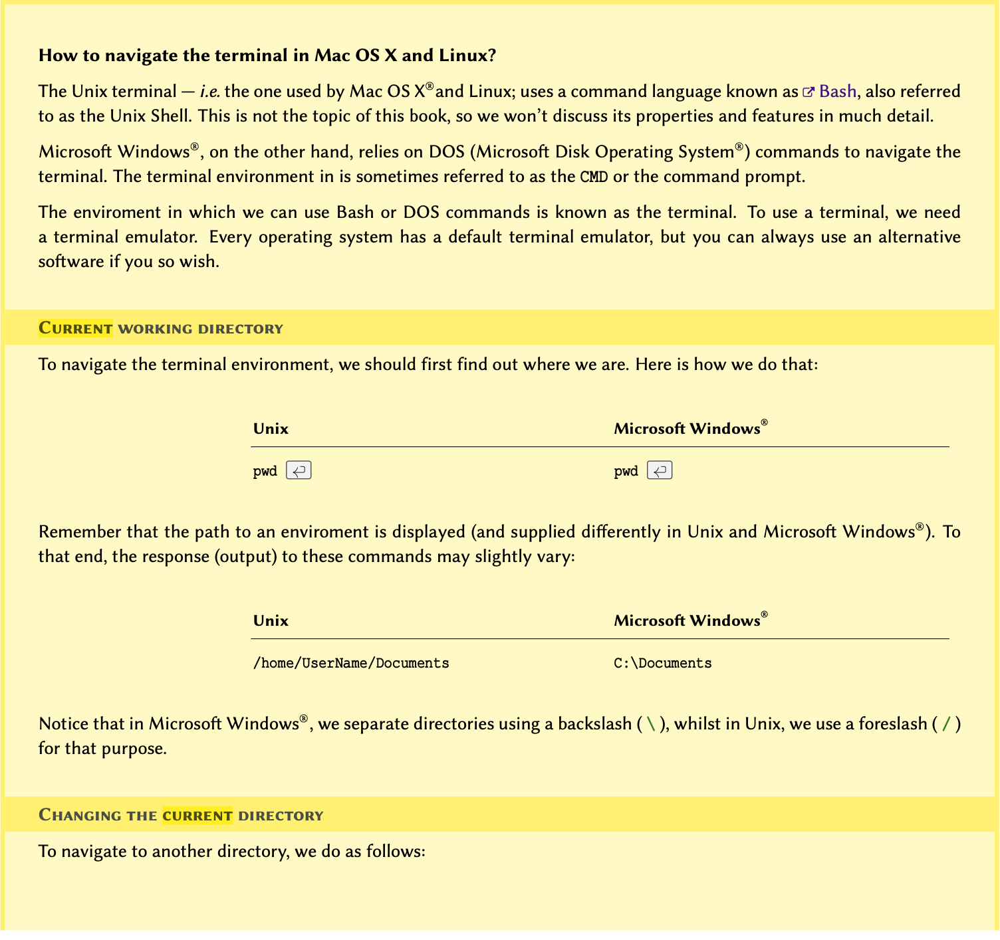
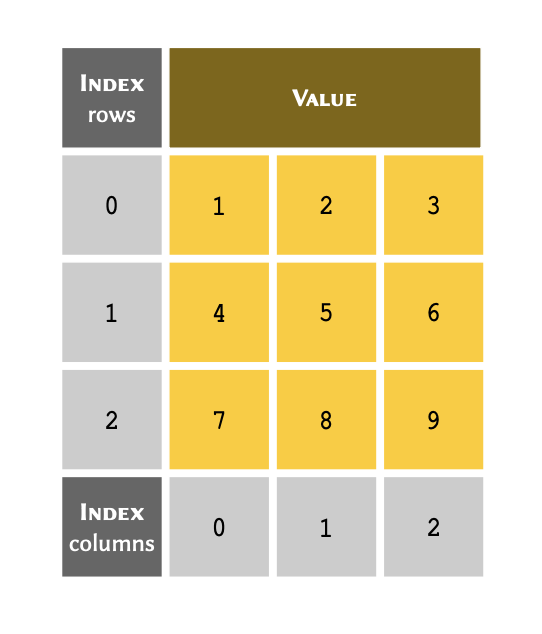
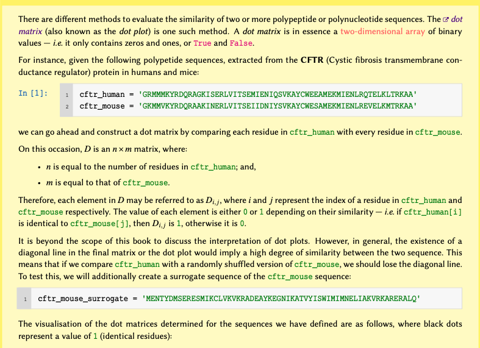
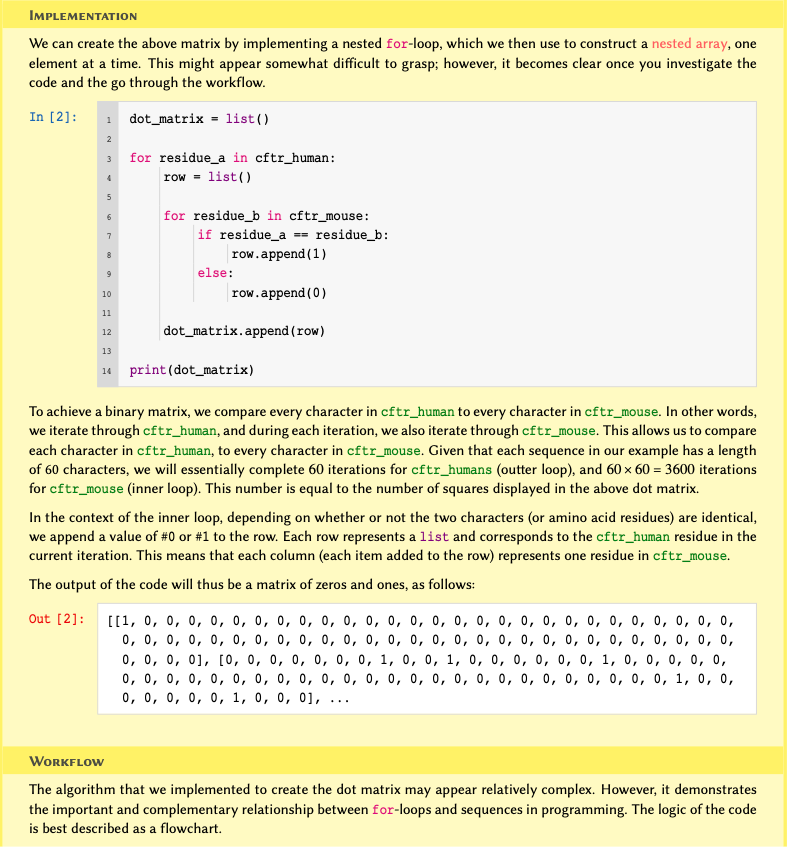
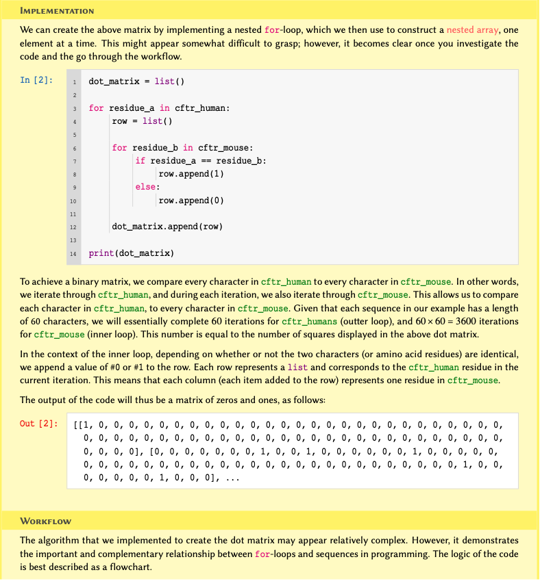

Getting started
Variables, Types, and Operations
Figure 1

Figure 2

Figure 3

Figure 4

Figure 5

* Not discussed in this course — included for reference only.
$
dict is not an iterable by default, however, it is possible
to iterate through its keys. Mutability is an important concept in programming. A mutable object is an object whose value(s) may be altered. This will become clearer once we study
list and
tuple. Find out more about mutability in Python from the documentations}.
Complex numbers refer to a set of numbers that have a real part, and an imaginary part; where the imaginary part is defined as \(\sqrt{-1}\). These numbers are very useful in the study of oscillatory behaviours and flow (e.g. heat, fluid, electricity). To learn more about complex numbers, watch this Khan Academy video tutorial.
Figure 6

Figure 7


Figure 8

Figure 9

Figure 10
Figure 11

Figure 12
Figure 13
Conditional Statements
Figure 1

Figure 2
In previous chapter, Do it Yourself,
we explored the implication of CAG repeats in Huntington’s
disease. We also created a polynucleotide chain containing 36 repetition
of the CAG codons.
Write a conditional statement that tests the length of a polyQ tract to determine the classification and the disease status based on the following Table:

Using the technique you used in Do it Yourself, create 5 polyQ tracts containing 26, 15, 39, 32, 36, and 54 codons. Use these polynucleotide chains to test your conditional statement.
Display the result for each chain in the following format:
PolyQ chain with XXX number of CAG codons:
Status: XXX
Classification: XXX
Hint: The length of a polyQ tract represents the number
of nucleotides, not the number of CAG codons. See task 4 of
Do it
Yourself for additional information.
Introduction to Arrays
Figure 1

Figure 2
Indexing
In arrays, an index is an integer number that corresponds to a specific item.
You can think of an index as a unique reference or a key that corresponds to a specific row in a table. We don’t always write the row number when we create a table. However, we always know that the 3rd row of a table means that we start from the first row (row #1), count 3 rows down and there we find the 3rd row.
The only difference in Python is that we don’t take the first row as row #1; instead, we consider it to be row #0. As a consequence of starting from #0, we count rows in our table down to row #2 instead of #3 to find the 3rd row. So our table may in essence be visualised as follows:

With that in mind, we can use the index for each value to retrieve it
from a list.
Given a list of 4 members stored in a variable called
table:
table = [5, 21, 5, -1]As demonstrated in the diagram; to retrieve a member of an array through its index, we write the name of the variable immediately followed by the index value inside a pair of square brackets — e.g. table[2].
PYTHON
print(table[2])OUTPUT
5PYTHON
print(table[0])OUTPUT
5PYTHON
item = table[3]
print(item)OUTPUT
-1Do it Yourself
Retrieve and display the 5th Fibonacci number from the
list you created in previous DIY.
PYTHON
print(fibonacci[4])OUTPUT
5It is sometimes more convenient to index an array backwards — that is, to reference the members from the bottom of the array. This is called negative indexing and is particularly useful when we are dealing with very lengthy arrays. The indexing system in Python support both positive and negative indexing systems.
The table above therefore may also be represented as follows:

If the index is a negative number, the indices are counted from the
end of the list. We can implement negative indices the same
way we do positive ones:
PYTHON
print(table[-1])OUTPUT
-1PYTHON
print(table[-2])OUTPUT
5PYTHON
print(table[-3])OUTPUT
21We know that in table, index #-3 refers the same value as index #1. So let us go ahead and test this:
PYTHON
equivalence = table[-3] == table[1]
print(equivalence)OUTPUT
TrueIf the index requested is larger than the length of the
list minus one, an IndexError will be
raised:
PYTHON
print(table[4])ERROR
Error: IndexError: list index out of rangeDo it Yourself
Retrieve and display the last Fibonacci number from the
list you created in DIY.
PYTHON
print(fibonacci[-1])OUTPUT
21Figure 3
Figure 4
Figure 5

Figure 6

Figure 7

Figure 8

Figure 9

Figure 10
Give then following of pathogens and their corresponding diseases:

- Substituting N/A for
None, create an array to represent the table in the original order. Retain the array in a variable and display the result.
- Modify the array you created so that the members are sorted descendingly and display the result.
Figure 11
A two dimensional arrays may be visualised as follows: 
Figure 12
Computers see images as multidimensional arrays (matrices). In its simplest form, an image is a two-dimensional array containing only 2 colours.
Given the following black and white image:

- Considering that black and white squares represent zeros and ones respectively, create a two-dimensional array to represent the above image. Display the results.
- Create a new array, but this time use
FalseandTrueto represent black and white respectively.
Display the results.
Figure 13

Figure 14
 where each row in the matrix
represents a node of origin in the graph, and each column a node of
destination:
where each row in the matrix
represents a node of origin in the graph, and each column a node of
destination:
Figure 15
 If the graph maintains a
connection (edge) between 2 nodes (e.g. between nodes A and B in the graph above), the
corresponding value between those nodes would be #1 in the matrix, and
if there are no connections, the corresponding value would #0.
If the graph maintains a
connection (edge) between 2 nodes (e.g. between nodes A and B in the graph above), the
corresponding value between those nodes would be #1 in the matrix, and
if there are no connections, the corresponding value would #0.
Figure 16
Given the following graph: 
Iterations
Figure 1

for–loop workflow applied
to a list array.Figure 2

Figure 3

Figure 4
 



Figure 5

Figure 6

Dictionaries
Figure 1
 One way to associate the proteins with their definitions would be to use
nested arrays. However, it would make it difficult to retrieve the
values at a later time. This is because to retrieve the values, we would
need to know the index at which a given protein is stored.
One way to associate the proteins with their definitions would be to use
nested arrays. However, it would make it difficult to retrieve the
values at a later time. This is because to retrieve the values, we would
need to know the index at which a given protein is stored.
Figure 2

Functions
Figure 1